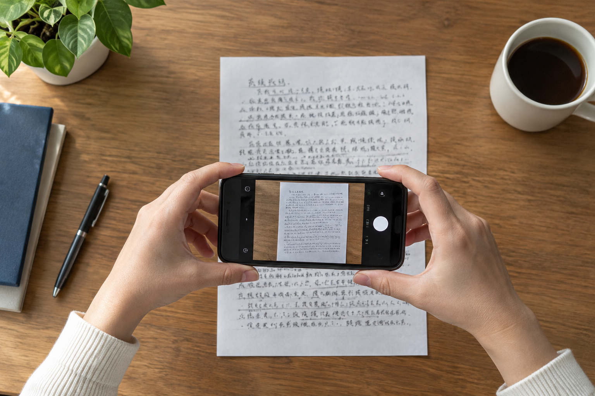

深圳线上提交手写文件，手机原图和压缩预览怎样分开
聊天窗口里的图片看着清楚，下载后未必仍有足够细节。

原图单独存放
深圳模仿笔迹沟通常先用手机拍材料。拍摄前把纸张放平、避开阴影，保留相机原文件；在聊天软件里发送的缩略预览可用于定位，不应覆盖原图。
整页与细节各有用途
整页显示栏位、页边和正文分布，近照用于观察连笔与笔锋。模仿签名、模仿签字样本尤其需要说明签署位置，不要只留下裁切后的姓名。
版本名说清来源
若后续要做笔迹鉴定资料整理，文件名写明拍摄日期、页码和是否为原件、复印件或扫描件。压缩版可加“预览”标记，防止和原始材料混淆。